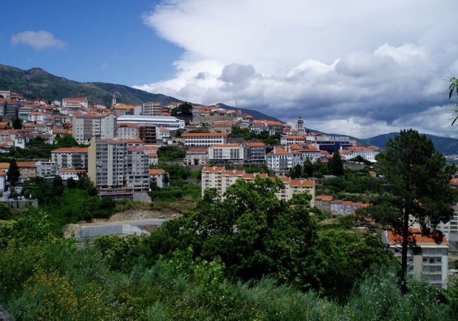

Erasmus in Covilha
Erasmus in CovilhaWhere is Covilha? Short description of this beatiful place.
Covilhã is a city and a municipality in the Centro region, Portugal. The city proper had 34,772 inhabitants in 2001.[1] The municipality population in 2011 was 51,797,[2] in an area of 555.60 km².[3] It is located in the Beiras e Serra da Estrela subregion and Beiras and Serra da Estrela Intermunicipal Community. The municipal holiday is October 20. Sometimes referred to as town of wool and snow, Covilhã is one of the main urban centres of the historical Beira Interior region. The proximity of the mountains offers dramatic scenery and a great environment for those fond of hiking, camping, mountain climbing and skiing.
Its history dates back to the days when it was a pre-historical settlement, a shelter for Lusitanian shepherds, and a Roman fortress known as Cava Juliana or Silia Hermínia. The region of Beira Interior, where the city of Covilhã is located, is rich in historical places. Due to its strategic potential, its mountains were used to build castles for both attack and defence purposes. Covilhã was granted foral in 1186 by king Sancho I of Portugal, who also built the castle walls. The old quarters of the city have narrow cobblestone streets; pedestrians are challenged permanently by the ups and downs of most of the streets in the city.
A school-factory was built by Fernando de Meneses, 2nd Count of Ericeira, in 1681. On November 1, 1755, Covilhã was shaken by the forces of the 1755 Lisbon earthquake that destroyed part of Covilhã's castle walls and its large towers. A Royal Textile Factory, was established in the city by the Marquis of Pombal in 1763, and Covilhã was granted city status on 20 October 1870 by king Luís I of Portugal. Along the two streams that cross the city there are still remains of the old textile factories, which bear witness to the unquestionable importance of this industry for Covilhã's economy, once known as the "Portuguese Manchester".
The climate in Covilhã is Mediterranean (Csa, according to the Köppen climate classification), moderately cold in the winter and relatively warm in the summer. There is the Vodafone Ski Resort, the only ski resort in Portugal, 20 km (12.4 mi) away from the city, actually in the neighbouring municipality of Seia. The cold increases according to altitude, varying from higher temperatures in the lower parts of the city to negative temperatures and snow occurrences, sometimes abundant, in the higher areas, such as Penhas da Saúde, above 1,500 meters of altitude, only 9 km away from Torre (Serra da Estrela). In the urban area of Covilhã the snow rarely appears and usually does not accumulate on the ground.
The nearest airports are located in Lisbon and Porto. From these two cities, Covilhã can be very easily reached both by train and coach. The railway and coach stations of Covilhã are within a walking distance from one to the other (10 minutes walk). It is also possible to reach Covilhã directly by coach from abroad. Partial view of Covilhã's core centre with the mountains in the background Covilhã is located, less than 300 km from Lisbon and Porto, the two biggest cities in Portugal and just 400 km from the Spanish capital, Madrid. Several national and international bus routes pass Covilhã, so it is easy and practical to reach almost all destinations. To reach Lisbon it takes 3.5h - 4h of journey, by bus or by train. The bus station is situated in the lower part of the city; and the railway station is near, no more than 10 minutes walking. The railway company is CP - Caminhos de Ferro Portugueses and offers various types of services. Inter City (Intercidades) train is recommended to reach Covilhã. There are also car rental companies in the city.